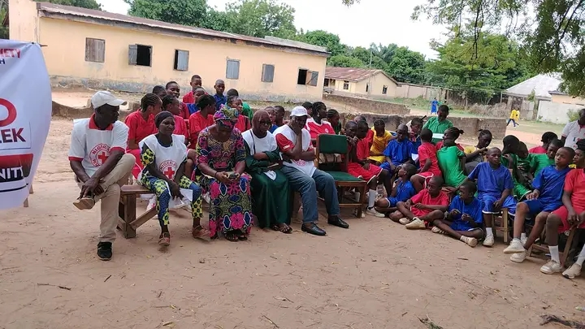
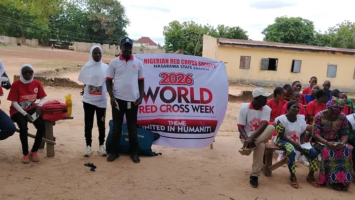

PTA NADP
PTA NADP
Stay informed with school timelines and upcoming milestones.
Entrance examination registration forms are now available online and at the administrative office.
Read Entry →Join us for a thrilling showcase of speed, strength, and sportsmanship on the main sports complex grounds.
Read Entry →The definitive timetable guidelines for all classes have been finalized and uploaded to portals.
Read Entry →The Nigerian Red Cross Society visited our institution to conduct a comprehensive empowerment program, focusing on health awareness, first aid training, and humanitarian values for our students and staff.
Read Full Article →
Interactive training session conducted by Red Cross officials

Students participating in empowerment activities
In a significant milestone for student development and community welfare, the Nigerian Red Cross Society recently conducted an empowerment program at PTA NADP International College. This initiative brought together students and staff in a meaningful engagement focused on humanitarian principles, health awareness, and practical life-saving skills.
The Red Cross team facilitated comprehensive training sessions covering essential topics including basic first aid, CPR techniques, disaster preparedness, and blood donation awareness. Students gained practical knowledge on how to respond to emergency situations and provide immediate assistance to those in need. The interactive nature of the sessions ensured active participation and engagement from all attendees.
Our students responded enthusiastically to the program, demonstrating a keen interest in learning life-saving skills and understanding the Red Cross mission. Many expressed their desire to become volunteer members and contribute to community health and safety initiatives. This empowerment session has inspired several students to pursue careers in healthcare and humanitarian services.
We remain grateful to the Nigerian Red Cross Society for this invaluable partnership and look forward to continued collaboration. This visit reinforces our commitment to holistic education that extends beyond academics to include character development, social responsibility, and civic engagement. Our students are now better equipped to make a positive difference in their communities.
The Nigerian Red Cross Society's mission is to inspire, encourage, facilitate and undertake humanitarian services and activities in the spirit of neutrality, impartiality and universality. We are proud to have them as partners in developing the next generation of compassionate leaders.